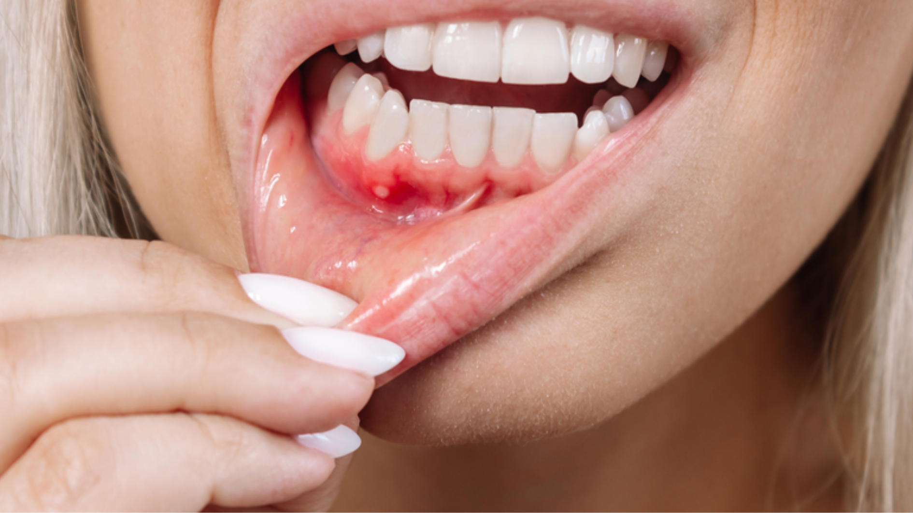

Hậu Quả Của Sốt Xuất Huyết
Hậu Quả Về Sức Khỏe Cá Nhân
Tỷ lệ tử vong: Tỷ lệ tử vong của sốt xuất huyết thường là 1-5% trong những ca bệnh được chẩn đoán và điều trị kịp thời. Tuy nhiên, ở những nơi không có chăm sóc y tế tốt, tỷ lệ này có thể lên tới 20%.
Sốt xuất huyết nặng: Là hình thức nguy hiểm nhất, với tỷ lệ tử vong 2.5-5% nếu không được điều trị kịp thời, lên tới 20% nếu chẩn đoán muộn.
Biến chứng cấp tính:
Biến chứng cấp tính:
- Sốc do mất chất lỏng
- Xuất huyết nặng
- Suy gan cấp tính
- Suy thận cấp tính
- Viêm não
- Viêm cơ tim
- Hội chứng hô hấp cấp

Hậu Quả Dài Hạn
Hội chứng sốt xuất huyết hậu bệnh (Post-Dengue Syndrome): Một số bệnh nhân sau khi bình phục khỏi sốt xuất huyết vẫn còn cảm thấy mệt mỏi, chán ăn, và yếu đuối trong 4-6 tuần.
Các biến chứng thần kinh dài hạn:
- Rối loạn cảm giác ở chi
- Mất ngủ kéo dài
- Rối loạn tâm thần
- Rối loạn nhận thức
Ảnh hưởng đến bà mẹ và thai nhi: Nếu mẹ bị sốt xuất huyết trong kỳ mang thai, đặc biệt là ba tháng cuối, có thể dẫn đến sinh non, cân nặng khi sinh thấp, và thậm chí tử vong của thai nhi.
Hậu Quả Kinh Tế-Xã Hội
Chi phí y tế: Điều trị sốt xuất huyết, đặc biệt các ca nặng, tốn kém. Bệnh nhân cần nằm viện, xét nghiệm, truyền dịch, và theo dõi liên tục.
Mất công năng lực lao động: Bệnh nhân mắc sốt xuất huyết thường cần từ 2-4 tuần để hồi phục hoàn toàn, gây mất hiệu suất lao động cho cá nhân và xã hội.
Tác động du lịch: Các vùng có dịch sốt xuất huyết thường bị ảnh hưởng lân cận trọng về du lịch, gây tổn thất kinh tế cho các công ty và cộng đồng địa phương.
Chi phí toàn xã hội: Theo ước tính, chi phí kinh tế hàng năm từ sốt xuất huyết lên tới 8.9 tỷ USD toàn cầu.
Ảnh Hưởng Đến Sức Khỏe Tâm Thần
Stress tâm lý: Bệnh nhân mắc sốt xuất huyết, đặc biệt là những ca nặng, có thể trải qua stress, lo âu, và thậm chí trầm cảm sau khi bệnh.
Sợ hãi và tâm lý ám ảnh: Những người từng mắc sốt xuất huyết nặng có thể sợ hãi khi thấy muỗi hoặc khi có triệu chứng tương tự lại xuất hiện.
Tác động gia đình: Bệnh của một thành viên gia đình có thể gây áp lực về tâm lý và kinh tế cho toàn bộ gia đình.
Nhóm Người Có Nguy Cơ Cao
- Trẻ em dưới 15 tuổi
- Người già trên 65 tuổi
- Phụ nữ mang thai
- Người có bệnh nền (tiểu đường, huyết áp cao, bệnh tim)
- Người bị suy giảm miễn dịch
- Những người từng mắc sốt xuất huyết và bị tái nhiễm